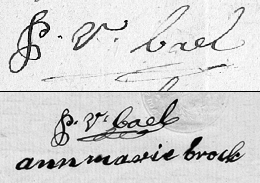
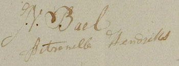
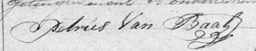
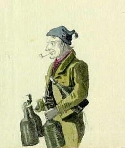
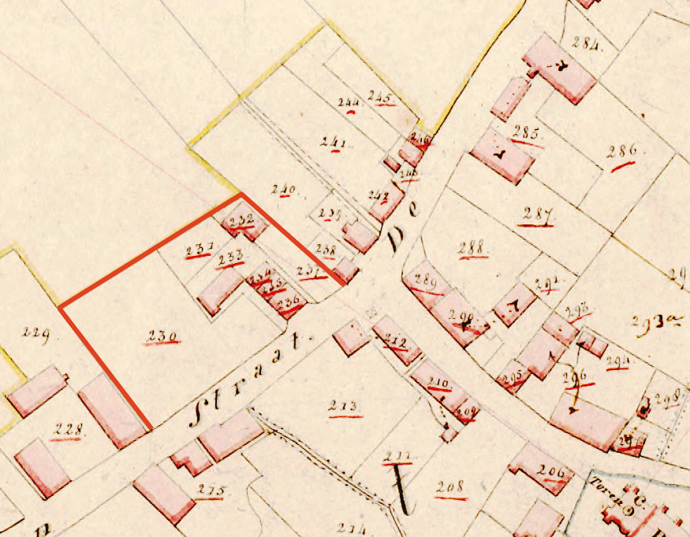
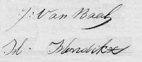
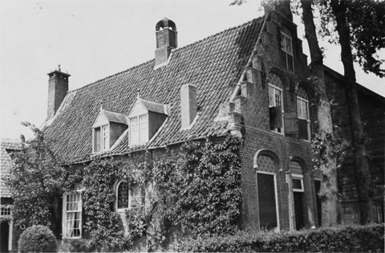
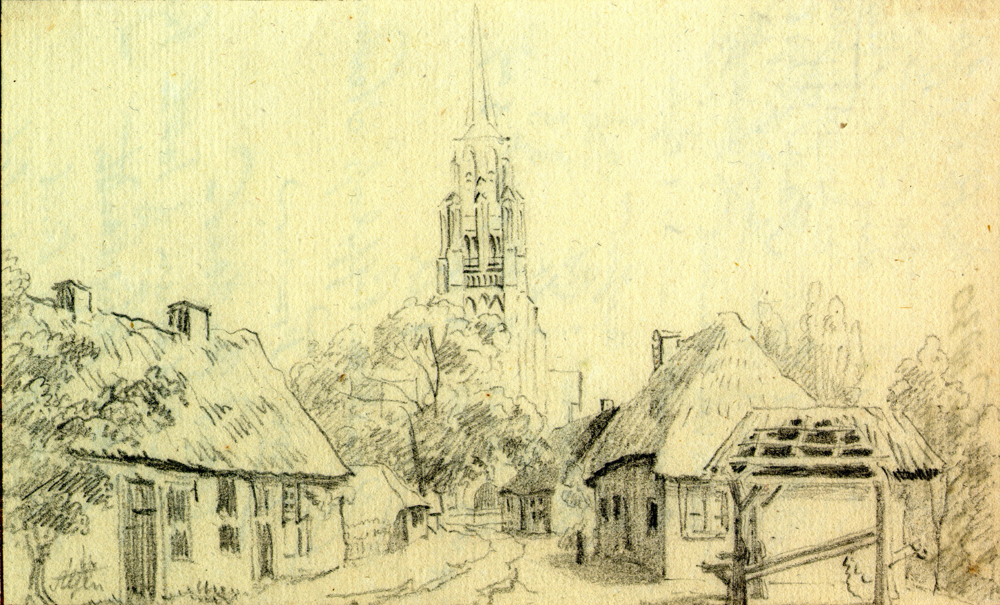
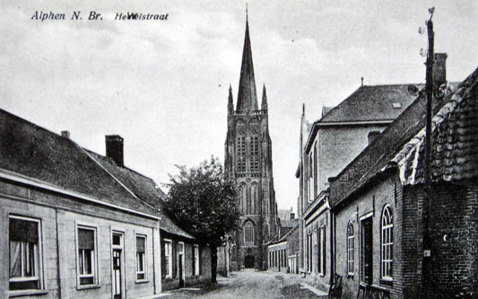
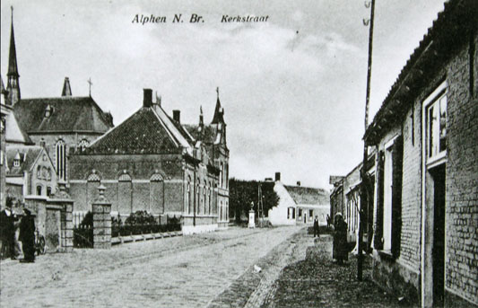

Gedoopt Merksplas 10 aug 1702, begraven Gilze 28 sep 1746.
Onder de naam Peter Dielisz Petersz, geboortig van Merksplas, getrouwd voor de predikant te Gilze-Rijen op 27 april 1737 met Maria Heiligerdochter Jansse. Zij was gedoopt te Gilze op 12 oktober 1712 als dochter van Heijliger Jansse & Maria Wilhelmus van Es. Haar ouders zijn te Alphen op 24 sep 1707 (RK) getrouwd.
Op 15 dec 1738 tekent Peeter Dielissen bij de schepenen van Gilze-Rijen een huurovereenkomst voor:
eene steede mette huysinge, schuere, en koijen daar op staende, ende erve daaraan ende toebehoorende groot int geheel onder lant, weijden en heijden, ontrent de tien buijnderen ofte soo groot ende cleijn de mate onbegrepen als de selve gestaan ende gelegen is in verscheyde parceelen onder dese jurisdictie tot Verhoven aldaar alles in dier voegen grotten [?] ende manieren als deselve steede lange jaeren bij de verhuerderesse is gebruijckt ende gepossideert geweest uijt genamen het landt gelegen inden broeckacker dat Bastiaen Vermeer jegenwoordigh gebruijckt, den huerman genoghsaam [sic] kennelijck soo hij verclaerde, ende dat voor eenen tijdt ende termeijn van ses aghtereen volgende jaeren, vast zonder eenigh berouw aenvanck nemende.Oftewel een boerderij met omgerekend 12,9 hectaren grond in het Gilzensche gehucht Verhoven. Verhuurder is Maria Adam Stoffel Embregts, "weduwe, ende testamentaire boedelhouster [sic] van wijlen Peeter Anthonij van den Nouwelant", die in de jaren 1728-1737 schepen was van Gilze en Rijen. Zij tekent de huurcedulle met "Maria Adaem Emmers de weduwe Van den Nolant". De huur bedraagt "hondert guldens 't stuck tot XL: grooten Vlaams eens te betaelen alle jaeren op Sinte Martensdage ende eerstmaal Sinte Marten 1739".
(Bron: Schepenbankarchief Gilze en Rijen, Protocol van verhuringen 1717-1750, inv.nr. 136, f.122-124, scans 130-132. In Gilze-Rijen stond een bunder gelijk aan 400 roeden oftewel 1,29 hectaren)
 |
| Gilze-Rijen 15 december 1738: De handtekening van Peeter Dielissen (Schepenbankarchief Gilze-Rijen, inv.nr.136,f.124) |
Op 5 juni 1745 continueert Peeter Dielissen de huur van:
eene steede, mette huysinge, schuere en koijen daer op staende, ende erve daeraen ende toebehoorende, groot int geheel onder lant, weijden, en heijden, ontrent de thien buijnderen ofte soo groot ende cleijn de juste mate onbegrepen als deselve gestaen ende geleden is in verscheijde parceelen onder dese jurisdisctie soo tot Verhoven oft inde Biestraete en acker aldaer, alles in dier voegen, grotten [sic], ende manieren, als deselve steede nu ses jaeren herwaarts bij den huerder is gebruijckt geweest, ende dat voor eenen tijt, ende termeijn van ses aghtereen volgende jaerenVerhuurder is nog altijd Maria Adam Embregts, die nu blijkt te zijn hertrouwd met Jan Willem Hoevenaers, schepen van Gilze-Rijen 1739-1756 (het huwelijk had plaatsgevonden voor schepenen te Gilze en Rijen op 25 jan 1739). De afgesproken huursom is dezelfde als in 1738 en de eerste betaling moet worden voldaan op Sint Maarten (11 november) 1745. Peeter tekent met "P. van der Dielissen".
(Bron: Schepenbankarchief Gilze en Rijen, Protocol van verhuringen 1717-1750, inv.nr. 136, f.160v-162v, scans 169-171)
De Gemaallijst (een belastingbron) voor het jaar 1744 somt de leden van het huishouden woonachtig in het gehucht Verhoven onder Gilze als volgt op:
Peeter Dielissen, Maria Janssen de vrouw, Adriaen Hendriks de knegt, Elisabeth Krol de meyt boven, Dilis, Peeter, Helena en Maria de kinderen Peeter van Baal de Scheijper onder.Dorpsbestuur Gilze en Rijen 672, f.16, scan 16.
Na de dood van Peeter Dielissen in 1746 woont het gezin in 1748 in bij Heijliger Janssen van Alphen, de vader van Maria, die een wagenmakerij had in de Biesstraat in Verhoven onder Gilze. Het huishouden is als volgt samengesteld:
Heijliger Janssen, Maria, Willem, Peeter en Cornelia de kinderen, en Jan van den Bleeck de knegt boven, Dielis, Peeter, Helena, Anna en Jan de dogters kinderen onder.
Dorps bestuur Gilze en Rijen, Gemaallijst 1748, inv. nr. 676, f.16v, scan 19.
In 1757 wonen zij daar nog steeds. Heijliger is dat jaar overleden, diens zoon Willem is het hoofd van het volgende huishouden:
Willem Heijliger Janssen, Peter en Cornelia de broer en suster, Jacob Aarts de swager, Dielis van Baal de neef, en Johanna Spapen de meijt boven, en Jan Bael de neef onder.
Dorpsbestuur Gilze en Rijen, Gemaallijst 1757, inv. nr. 685, f.19, scan 21.
Op 2 maart 1748 verkoopt Maria Heijliger Janssen, weduwe van Peeter Dielissen, "geassisteert met den schepen Dirck de Vries haeren gecoisen voogt en assistent in desen ende Willem Heijliger Janssen als toesiender van de vijf minderjarighe kinderen" haaf en meubilaire goederen die twee gulden en daar beneden komen te gelden. Daaronder een "vaelen osch" (voor 87 gulden naar Peeter Heiliger Janssen) en een "vaele bleere koeij" (bleer, blaar of bles duidt op anderskleurige vlekken op de kop en rond de ogen, voor 50 gulden naar Cornelis Janssen van Boxtel tot Molenschot).
Bron: Schepenbank Gilze 132, scans 76-78.
Uit dit huwelijk:
- Egidius (Dielis) van Baal
Gedoopt Gilze 24 maart 1739 (getuigen: Jacobus Egidius van Baal en Maria van Es) - Peeter van Baal volgt III
- Helena van Baal
Geboren voor 1744. - Maria van Baal
Geboren voor 1744, gestorven voor 1748. - Anna van Baal (1744-1820)
Gedoopt Gilze 24 maart 1744 (getuigen: Joannes Jansen en Maria Schoormans), aldaar overleden zondag 5 november 1820, om 9 uur des voormiddags, in de leeftijd van 76 jaar, zijnde weduwe van Jan van de Grint (sic) en dochter van Peter van Bael en Maria Janssen. Wellicht identiek met Anna van Baal, geboren te Gilze, die op 1 maart 1778 trouwt (NH) te Gilze met Jan Baptist van Es, weduwnaar Marianne Huibers Tielemans, geboren te Riel, wonende te Goirle; te Goirle wordt op 15 sep 1798 een Jan Baptist van Es begraven, 'heeft geen kinderen' (Predikantsprocotol Goirle 1730-1810, inv.nr. 3, f.130.Op 2 dec 1799 trouwt Anna van Baal, weduwe van Jan Baptist van Esch, geboren te Riel (sic), "dog veele jaaren woonende te Goirle", voor schepenen van Tilburg en Goirle met Augustinus van Ginsven, meerderjarige jongeman geboren te Michielsgestel en wonende te Tilburg, geassisteerd door Gerard van Ginsven die de toestemming van zijn moeder overdraagt. Hij overlijdt op 52-jarige leeftijd op 6 juni 1817 te Boxtel, zoals aangegeven bij de Burgerlijke Stand door zijn broer Antonij van Grinsven; de genoemde ouders heten Francis van Grinsven en Christina van den Mosselaar, een vrouw wordt niet genoemd in de overlijdensakte.
"Anna P. van Bael" ondertekent op 22 dec 1781 te Gilze ten behoeve van haar man Jan Batist van Es een koopakte (bron: Schepenbankarchief Gilze en Rijen, inv.nr. 46, f.56-57). Op 15 maart 1787 verkopen Jan Baptist van Es en 'zijne huisvrouw Anna van Baal' voor schepenen van Gilze en Rijen aan Jan Tempelaers een huis bestaande uit een keuken, kelder, koeiestal en achterhuis, 'geleegen onder Gilze op den Heuvel', met nog 180 roeden 'uitgestreeken putten hijde gelegen in de hijde tusschen Chaam en Gilze' en een half bunder heide 'geleegen onder Gilze omtrent Valkenberg genaamt het Langven rontom 's heere vroente'; Anna tekent 'Anna van Es' (bron: ibidem, inv.nr. 120, f.218).
- Jan van Baal
Gedoopt Gilze 12 jan 1747 (getuigen: Wilhelmus en Cornelia Jansse)
Nota: De doopboeken van Gilze zijn niet betrouwbaar. Ze gingen verloren bij een brand in 1762, waarna ze werden gereconstrueerd voor zover inwoners zich nog data konden herinneren.
Schepen van Alphen 1774-1776. Bij de eedaflegging op 26 okt 1774 (de ambtstermijn volgde niet het kalenderjaar) heet hij "Peter Dielis van Baal", hij tekent P. van Bael.
Bron: Schepenbank Alphen en Chaam, inv.nr. 6, scan 17 de dato voor de voordracht te Breda op 9 sep 1774 en voor de eedaflegging op 26 okt: inv.nr.8, scan 29.
Wederom schepen van Alphen in alle jaren tussen 1798 en 1803, veelal onder de naam Pieter van Bael, zie trouwboek Alphen 1796-1803, bijvoorbeeld f.39v dd 21 oktober 1802, met exemplaren van zijn handtekening. Deze signaturen moeten wel aan Peter van Baal worden toegeschreven, ze lijken als twee druppels water op de handtekening die "Peter van Bael" op 6 feb 1811 onder de huwelijksakte van zijn dochter Helena zet (zie afbeelding).
Kerkmeester van de H. Willibrorduskerk in Alphen over de jaren 1801 en 1802.Bron: Jaarrekeningen van de kerkmeesters van de Grote Kerk te Alphen, 1759-1813.
Na de dood van zijn vader in 1746 woont hij met zijn moeder, broers en zusters in bij zijn grootvader Heijliger Janssen van Alphen, die een wagenmakerij had in de Biesstraat in Verhoven onder Gilze. Vanaf 1751 woont hij daar niet meer, wel zijn broers "Dielis Peeter van Bael" en "Jan Peeter van Bael", en zuster Anna. Mogelijk was Peter (inmiddels 11 jaar oud) ergens in de leer.
Dorpsbestuur Gilze en Rijen, Gemaallijst 1748, inv. nr. 676, f.16v, scan 19. Gemaallijsten 1756 en 1757.
Op 8 mei 1771 kopen Peter van Baal en zijn vrouw Anna Maria Brok een huis met grond in Alphen uit de boedel van zijn oudoom Hendrick Jansen Raijmaker, die in dat dorp een wagenmakerij had. Het betreft:
eene huijsinge, vaerkstal, schuer, hov, land en weijd daeraen, staende en leggende alhier aen de kerck, oost, suijd en noord Christiaen Johan van Heijst nomine uxoris, en west 'sHeere Straet, groot omtrent een buynderen nog een akker van 75 roeden op de Goedentijd, en een heiveld rond de Heimolen "rondom 'sHeere Straet" omtrent een half bunder — het geheel voor 865 gulden uit de boedel van wijlen Hendrick Jansen en diens vrouw Maria Geert. Executeur testamentair van Hendrick Jansen is Willem Heijliger Jansen (Peters oom), die is benoemd op 18 apr 1768 voor secretaris Henricus Kamerling te Alphen. De transportakte opgemaakt bij de schepenen van Alphen en Chaam vloeit voort uit een publieke verkoop van dit huis aan Van Baal op 27 februari 1771.
Bron: R 614,f.155r-156r.
 |
| Met deze handtekeningen kopen Peeter van Bael en Annemarie Brock op 8 mei 1771 een huis in Alphen "aen de kerck". Bron: R 614,f.156r. |
Op 30 nov 1796 koopt Pieter van Bael voor 680 gulden:
eene suidelijke helft van een perceel land genaamt De Hijning gelegen alhier onder de kerk, groot in t geheel circa 1000 roeden, oost de baane, zuijd de kinderen van Christiaen Woestenberg cum suis, west den molenweg, en noord voorschreve kinderen van Christiaen Woestenberg. Belast met de helft in drie stuijvers en tien penningen aen de pastorij van Chaam.
Bron: R 617, f.14v-15r.
De overdracht volgt op een publieke verkoping ter secretarie te Alphen op 31 aug 1796. Verkopers zijn Adriaen Peeter de Rooij en diens broers en zussen. Op 7 november heeft Van Bael reeds de kooppenningen voldaan. Vermoedelijk gaat het hier om het perceel aangeduid op de kadastrale kaart van 1832 met het nummer 200:
Op 23 aug 1799 gaat Annemarie Brock, getrouwd met Pieter van Bael, een erfdeling aan met Adriana van Gool, weduwe van wijlen Michiel Backx en een halfzus van moederszijde. De erfdelen zijn hun aangekomen bij erfdeling de dato 18 mei 1787, aldus de akte. Annemarie komt de volgende goederen toe gelegen in de buurtschap Goedentijd: de oostelijke helft van een perceel weide, groot in het geheel 278 roeden; een perceel "zoo land, bosch als heijder", groot 400 roeden; een perceel genaamd de Kerkenakker, groot 428 roeden; een weide van 200 roeden; een perceel heide groot 150 roeden.
Bron: R 617, f.93-95 de dato 23 aug 1799 en R 616, f.83v-87r de dato 18 mei 1787.
Op 9 jan 1805 koopt Pieter van Bael voor 250 gulden een perceel weide van 250 roeden gelegen in de buurtschap Goedentijd, van Cornelis Peter van Eijck.
Bron: R 618, f.13v-14r.
Getrouwd voor schepenen van Alphen op 14 april 1771 met Johanna Maria Brock uit Alphen, aldaar gedoopt 19 aug 1742 en overleden 13 okt 1819, dochter van Jan Brock uit Alphen bij Joanna Dingeman Stouts uit Chaam. De bruidegom (Peter van Baal) heet in de schepenakte geboortig van Gilse, maar woont in Alphen. Het kerkelijk huwelijk wordt dezelfde dag in Alphen voltrokken door pastoor Andreas Vosbergh. Getuigen: Petrus en Adrianus van Asten. In de registers van de huwelijkse bijlagen is nog te lezen dat de drie zondaagse proclamatiën plaatsvonden op 31 maart, 7 april en 14 april.
Johanna's grootvader Dingeman Francis Stouts, oorspronkelijk inwoner van Chaam, pacht sinds 1726 de Nieuwelandse Hoeve en sinds 1734 de Leuwereneijck Hoeve te Alphen van de abdij van Tongerlo. De Nieuwelandse hoeve is de oudste boerderij van Alphen (16de eeuw); het goed zelf wordt al in 1212 vermeld.
Anna Maria Brock overlijdt in wijk A, huis nummer 55. Haar dood wordt aangegeven door Nicolaas Prijns (48 jaar), koopman, en Cornelis van Gorp (44), bierbrouwer, beide naaste geburen van de overledene..wonende te Alphen aan de kerk. Cornelis van Gorp was op 13 jan 1775 gedoopt als zoon van Jacobus van Gorp en Gertrudis Tempelaars; deze Jacobus was lange tijd schepen van Alphen, ondermeer met Pieter van Bael in 1802-3.
|
 |
| Boven: de handtekening van schepen Pieter van Bael onder een huwelijksakte uit het Alphense schepentrouwboek de dato 1 mei 1802 (inv.nr. 18, f.38). Onder: de handtekeningen van Peter van Bael en Annemarie Brock onder de huwelijksakte van hun dochter Helena, Alphen 6 februari 1811. |
Uit dit huwelijk (niet compleet):
- Petronella van Baal
Gedoopt Alphen 28 januari 1772 als filia legitima Petri van Bael et Annae Mariae Brock. Doopgetuigen: Joannes van Baal en Joanna Stouts. Op 24 april 1773 wordt te Alphen begraven Petronilla, een jong kind (L.: parvula) van Peter van Baal.Uit het schepenbankarchief van Alphen wordt duidelijk dat Petronella is gestorven na een ongeluk:
Informatie genoomen door den wel edele heere Floris van Gils, schouteth van Alphen, Baarle en Chaam, in naame van het officie ten huijse van Peter van Baal alhier in Alphen omtrent de Kerk. De voorss: Peter van Baal en sijne huijsvrouw Anna Maria Brok door de heer officier ondervraagt sijnde hebben verklaart, dat gepasseerde dinsdag sijnde geweest den 20e deser maand april des nademiddags omtrent vier uuren, haar kind met naame Pitronella sig heeft gebrand aan de regterhand, beide de haare beenen en den hals en de regter heup, door vallen in een ketel, welken in de stal stond en waar in heet voeder voor de beesten en een hand ketel met water stond, dat de voornoemde huijsvrouw van Peter van Baal alleen met haar voorss: kind in de stal was toen dit gebeurde, dat hij van Baal en sijn knegt Jacobus Luijten, benevens Cornelis van de Westelaeken vervolgens op het roepen der vrouw sijn te hulp gekoomen en het kind geholpen hebben, dat vervolgens het kind verbonden is geworden door de vrouw van Peter de Rooij, dat het kind donderdag de 22e april daar aanvolgende naar verscheijde stuijpen te hebben gehad is overleden, als doe van lichtmis af over 't jaer oud zijnde, dat ten tijde van 't overleijden daar bij present waeren, de huijsvrouw van schepen Christiaan Johan van Heijst, de vrouw van Jacobus Tempelaers en de weduwe van Adriaan van Gool, dat het gemelde kind dese morgen alhier op het kerkhof begraven is, sonder daar toe van iemand consent te hebben versogt of bekoomen. Fragment uit: Schepenbankarchief Alphen en Chaam, inv.nr. 587, f.172 de dato 24 april 1773, met handtekening van PEETER VAN BAEL en van ANNAMARIE BROCK.
En:
Visitatie gedaan bij de ondergeschreven schepenen in Alphen aan het doode lichaam van Pitronella van Baal, op den 24e april deses jaars op het kerkhof alhier begraven, en sulks ter requisitie van de wel edele heer Floris van Gils, Het voorss: lichaam opgegraven en in de kerk overgebragt sijnde is de kist aldaar geopent en aan het daar in sijnde lichaam op verscheijde plaatsen blessures bevonden, door branden veroorzaakt, waar van den chirurgijn Francois Immens zijne bijsondere verklaring zal geeven. Fragment uit: R.587,f.173 de dato 25 april 1773.
N.B.: Op 26 april 1773 verklaren vier Alphense vrouwen dat zij op 20 april naar het huis van Peter van Baal, alhier aan de kerk wonende geroepen zijn om Van Baals kind Petronella te helpen die zich in heet nat gebrand hadde. Het zijn Cornelia Havermans, vrouw van Peter de Rooij; Maria Anna Vaerten, huisvrouw van schepen Christiaen Johan van Heijst; Geertruij Stouts, huisvrouw van Jacobus Tempelaers; en Cornelia van Bergen, weduwe Gerardus van der Wal. Bron: R 113,f.173v.
- Petronella van Baal
Gedoopt Alphen 20 maart 1774 (doopgetuigen: Adriaan Brok & Anna van Baal), overleden te Ginneken en Bavel 30 april 1856 als vrouw van Joannes Kock (internetbron, originele akte niet gezien). Door pastoor Mutsaers te Alphen op 24 juni 1795 in de echt verbonden met Joannes Baptista Kock, onder getuigenis van Petrus van Asten en Henricus Dilis. In de bijlagen van het schepentrouwboek van Alphen (inv.nr. 22, f.17-19) genoemd als in de echt verbonden op 14 juni 1795 na drie zondaagse proclamatiën, de laatste op 14 juni, de bruidegom heet "Joannes Kock meerderjarige jongeman, geboren te Oosterhout en woonende te Ginneken", de bruid heet "Pitronella van Baal minderjarige jonge dogter gebooren en wonende alhier te Alphen".Kock was van 1812 tot 1815 molenaar te Gilze. In 1812 koopt hij aldaar de Heimolen, een houten windkorenmolen op standaard, van de Staat, om deze op 9 augustus 1815 te verkopen aan Jan Baptist Theeuwes, molenaar(sknecht) te Princenhage, voor de som van 12.000 gulden Hollands courant; op 1 januari 1816 komt ook het molenaarshuis vrij — bron: Ed Ragas, Theeuwes, een geslacht van molenaars (1994). In de 18de eeuw had een zekere Petrus Kock (gedoopt te Princenhage 26 juli 1708, overleden Terheijden 17 mrt 1773) van 1743 tot 1748 de molen al bemalen; de molen was in deze tijd eigendom van het Domein van Breda (familie Oranje-Nassau). De Heimolen brandt in 1868 af, het molenhuis bestaat nog. Vermoedelijk overleed Joannes Kock te Berghem in 1835.
- Johannes Petrus van Baal volgt IV
- Maria van Baal
Gedoopt Alphen 16 nov 1779, aldaar overleden 8 dec 1861 op 82-jarige leeftijd. Doopgetuigen: Dingeman Brock & Catharina Janssens. Molenaarster, getrouwd Alphen 21 feb 1808 met Cornelis van Gorp (gedoopt Alphen 31 jan 1778, aldaar overleden 16 dec 1820) zoon van Cornelis van Gorp (1747-1777) & Wilhelmina Prinsen. Hij was molenaar op de Houten Molen te Alphen, een standaardmolen die ten zuiden van de dorpskern tussen de Molenstraat en de weg naar Baarle stond. Ook bekend als de Goormolen en Akkermolen (De Brabantse Leeuw LI (2002) p.46-62,65-77,176-186,218-231 en LII (2003) p.13-21,143-150). Alphen telde een tweede windmolen, bekend onder een veelheid aan namen: de Stenen Molen, Brakelmolen, Heimolen, Princemolen, en molen De Hoop (in 1739). De laatste molenaar van deze molen was Victor Johannes Dominicus van Gorp, die op 3 nov 1919 naar Dongen vertrok. De molen werd kort daarna afgebroken. De houten molen, nog op de kadastrale kaart uit 1832 vermeld, was voor die tijd al verdwenen.Uit dit huwelijk:
- Cornelia van Gorp
Geboren Alphen 10 feb 1810, aldaar overleden 31 okt 1871. Trouwt te Poppel op 26 feb 1835 met Henricus van Hees, geboren Poppel 19 jan 1837, gestorven Alphen 20 okt 1877, zoon van Henricus van Hees en Cornelia de Bont. Van Hees pacht van 1835 tot 1874 De Prinsenhoef ofwel het Hof Ter Brake< te Alphen, in het gehucht Ter Over. Deze versterkte boerenhoeve was vanaf c. 1144 in het bezit van de orde der Tempeliers en werd in 1313 een commanderij van de Johannieterorde met eigen, lagere rechtsmacht. In 1621 viel het goed aan het huis van Oranje-Nassau (waarna de naam Prinsenhoef in zwang kwam), hetgeen in 1648 bij verdrag werd bekrachtigd. Eigenaar in 1831 is de weduwe Jan Baptist Verheijen.
- Helena van Baal
Gedoopt Alphen 9 dec 1782, aldaar overleden 17 juni 1853. Doopgetuigen: Michael Bax en Adriana van Alphen. Getrouwd Alphen op 6 feb 1811 met Martin Horevoorts, landbouwer, overleden op 89-jarige leeftijd te Alphen 12 april 1862, zoon van Laurens Horevoorts en Cornelia van de Corput. Het echtpaar woont in wijk A nummer 55 aan de kerk. Het eerste kadastrale register uit 1831 merkt Martinus aan als eigenaar van een huis (nr.316) en enkele aanpalende percelen aan de oostzijde van de Rielseweg, grenzend met de zuidzijde aan de bierbrouwerij van de erven Jacobus van Gorp (nu hotel-restaurant Den Brouwer in de Raadhuisstraat).Nota: de doopgetuige Michiel Backx was getrouwd met Adriana van Gool; zij overlijdt te Alphen op 24 mei 1831, als 81-jarige weduwe, en was te Alphen geboren als dochter van Adriaan van Gool en Johanna Stouts.
- Petrus van Baal
Gedoopt Alphen 27 april 1789, overleden Ginneken 16 nov 1862. Doopgetuigen: Jacobus Adrianus Aerts en Adriana van Gool, 'pater ex Gilze'. Als inwoner van Ginneken, uitoefenend het beroep van wagenmaker, aldaar getrouwd op 25 nov 1820 met Adriana de Jongh, 35-jarige dochter van Gerardus de Jongh bij Adriana Goyaerts, geboren te Ginneken en Bavel. De Huwelijkse Bijlagen bevatten een Certificaat van de Nationale Militie, met het volgende signalement: 1,725 m lang, met bruine ogen en bruin haar. Uit dit huwelijk een zoon Petrus van Baal die te Ginneken en Bavel overlijdt op 21 juli 1903. - Petronella van Baal
Gedoopt Alphen 4 nov 1776, aldaar overleden 2 feb 1833 oud 56 jaar, 2 maanden en 29 dagen. Doopgetuigen: Wilhelmus Jansen en Cornelia Brok.
Wagenmaker en uitbater van een herberg in de Kerkstraat te Alphen. Deze uitspanning stond op de plek waar nu het voormalige raadhuis staat. Hij kocht het pand op 6 feb 1815 in een openbare veiling uit de nalatenschap van Jacoba Fabri, weduwe Johannes de Bosson. Hij betaalde er 992,10 gulden voor. Omschrijving:
Een huis, schop, bakhuis, hof en erve gestaan en gelegen te Alphen in de Kerkstraat Wijk A, No. 50, groot omtrent dertig roeden, oost en noord de Straat, zuid en west L. C. Vaarten, 's jaars belast met vijf stuivers tien penningen aan de Pastorij van Chaam.Bron: Tilburg, toegang 2204, archief notaris C.A. Hendrickx te Baarle-Nassau, inv.nr. 12, akten 5 en 11, scans 12 (omschrijving) en 19 (definitieve verkoop met handtekeningen). De veiling vond plaats in de herberg (scan 19) van Pieter de Roy, logementhouder wonende te Alphen. De protestantse familie van kosters en schoolmeesters De Bosson wordt al in de 17de eeuw genoemd in Alphen.
De herberg blijft tot 1899 in de familie. Op 30 november van dat jaar verkopen zijn erfgenamen via een publieke veiling:
het van ouds bekende koffiehuis met vergunning genaamd De Ploeg, allergunstigst gelegen in het dorp te Alphen, bij het kadaster bekend, gemeente Alphen, sectie H nummer 611 huis en erf groot drie aren, zevenendertig centiaren, met uitzondering van het zuidelijk gedeelte, dat als schuurtje tot dat nummer behoorde, zoals thans is afgebakend.aan de katholieke parochie voor 4100 gulden (ongeveer 56.000 euro omgerekend naar de koopkracht van 2015). Twee stukken aanpalende tuin (H. nr. 758 en H. nr. 966 worden ook meeverkocht. Verkopers zijn Adrianus van Baal (wagemaker), Anna Cornelia van Baal (zonder beroep), Hendrikus van Baal (schoenmaker), Michael van Baal (leerlooier), allen wonende te Alphen. Koper is:
Michiel Josephus Woestenberg secretaris van en wonende te Alphen [....] die verklaarde dat hij den koop gedaan had voor de Roomsch Katholieke Kerkgemeente van en te Alphen, in hoedanigheid van secretaris bij het kerkbestuur derzelfde gemeente en als zoodanig accepteeren.Bron: notaris A.C.J. van Hal, te Chaam, akte 285 de dato 16 nov 1899 en akte 300 de dato 30 nov 1899. Zie ook het parochiearchief Alphen no.299.
De gemeente koopt De Ploeg vervolgens op 1 februari 1900 van het kerkbestuur voor 2000 gulden (Bron: Archief Dorpsbestuur Alphen en Riel, inv.nr. 79). De herberg was gevestigd in een gedeelte van Jans woonhuis aan de Kerkstraat, en de gemeente kocht het op om er een nieuw Raadhuis te laten bouwen. Op 27 maart 1900 wordt al een bestek van voorwaarden voor het bouwen hiervan vastgelegd (Bron: ibidem, inv.nr. 80). Het huidige Raadhuis van Alphen staat op dezelfde plek.
Laat vier kinderen na: Jan, Peter, Anthonij en Maria. Zijn nalatenschap bestaat uit:
- 'de helft van een huis, schop, wagemakerswinkel, hof en erve, gestaan en gelegen te Alphen aan de Kerk, wijk A, nr. 50, groot in 't geheel ongeveer dertig roeden;'
- 'drie vijfde part in honderd roeden land aan de noordzijde van het perseel land genaamd De Heijning, gelegen te Alphen onder de kerk'
- 'de helft van een perseel heide en jong mastbosch gelegen te Alphen ten westen en noorden van den nieuwen akker, behoorende tot de pastoreele hoef, groot in 't geheel omtrent een bunder, drie en negentig roeden en zeventig ellen'
Bron: memorie van aangifte van de nalatenschap van Johannes Petrus van Baal, gepasseerd te Alphen op 27 april 1833. Kadastrale nummers worden in deze bron niet gegeven.
De kadastrale legger uit 1831 (oorspronkelijke aanwijzende tabel, OAT) levert de volgende lijst percelen op:
- Sectie H (Dorp), nr. 171 (een perceel bouwland nabij de Gereformeerde Kerk, uitlopend vanaf de Baarlescheweg naar het westen, 34 roeden 60 el);
- Sectie H nr. 200 (tuin, 4 r 29 e)
- Sectie H nr. 201 (huis-schuur-en-erf, 2 r 69 e)
- Sectie H nr. 495 (85 r 80 e);
- Sectie A (Alphense Heide) nr. 149 (25 r 60 e). Dit perceel, ten noorden van de Chaamseweg, draagt anno 2026 nog steeds hetzelfde nummer (zie afbeelding)
In 1840 verkoopt Petronilla Hendriks, weduwe van Johannes van Baal een gedeelte van een stuk grond te Alphen (Sectie H, nrs.200 en 202, totaal 6 roeden 98 el) voor 25 gulden onderhands aan de parochie (Bron: Archief parochie Sint Willibrordus, inv.nr.287-288). Het woonhuis en de wagenmakerij moeten in deze periode zijn verhuurd: het bevolkingsregister geeft in 1840 de in Baarle-Nassau geboren pastoor Cornelis de Wilde (1797-1874), een kapelaan en een dienstmeid op als de drie nieuwe bewoners van het adres Kerkstraat 50. De Wilde was in 1833 aangesteld als pastoor, de oude pastorie was in 1838 afgebroken.
De 66-jarige weduwe woont volgens het bevolkingsregister 1840 als 'winkelierster' op adres Kerkstraat nummer 53 met kinderen Johannes van Baal (31 jaar), Pieter van Baal (29) en Anna Maria van Baal (24). Voor zover nu kan achterhaald worden, is Petronella na de dood van haar man ingetrokken bij haar schoonzus, de bakkersweduwe Helena Hendriks-De Roij, die aan de overkant van de Kerkstraat woonde. Helena was weduwe van Petronella's broer Michiel Hendriks (gedoopt Alphen 31 januari 1772, aldaar overleden op 59-jarige leeftijd 18 december 1831). Petronella's overlijden in april 1847 wordt aangegeven door twee neven: de 35-jarige kuiper Adriaan Peijmans en de 31-jarige broodbakker Jan Hendriks.
Adriaan Peijmans, kuiper, zoon van Antonij Peijmans en Johanna Mattheussen, was te Alphen op 13 februari 1835 getrouwd met de 25-jarige Maria Catharina Hendriks, dochter van Michiel Hendriks en Helena de Roij. Hun dochter Maria Magdalena Peijmans (geboren Alphen 10 oktober 1842 op adres Kerkstraat 57) overlijdt op 88-jarige leeftijd te Alphen op 13 november 1930, Kerkstraat nummer 150. Aangever is de 65-jarige gemeentebode Johannes Wilhelmus Remeijsen, zie de foto verder op deze pagina. Haar ongetrouwde broer Adrianus Petrus Peijmans, kleermaker, was op 2 april 1925 overleden op adres Kerkstraat 145. Ook zijn overlijden wordt aangegeven door gemeentebode Remeijsen.
 |
| Kadastrale kaart van Alphen uit 1832. De wagenmakerij van Jan Peter van Baal (1776-1833) lag ten zuiden van de Willibrorduskerk: de twee percelen 200 (de tuin) en 201 (huis, schuur en hof). Het huis wordt in het bevolkingsregister 1829 met nummer 50 aangeduid. Beide percelen werden na Jans dood verkocht, een deel al in 1840 door zijn weduwe. De tuin kreeg later een bestemming als voortuin van de Oude Pastorie, een laat-19de-eeuws pand. Het woonhuis en de wagemakerswerkplaats (No.201) kregen in 1840 een nieuwe bestemming als pastorie. Hier verrees in 1900-1901 het Raadhuis van Alphen (met veldwachterswoning), dat er in herbouwde vorm nog steeds staat. |
Petronella's vader Jan Willem Hendriks is gedoopt te Alphen op 3 januari 1732 en overlijdt aldaar op het adres Kerkstraat 51, op 6 oktober 1815. Hij is dan 83 jaar oud, gemelde ouders zijn Willem Jan Hendriks en Adriana Peeter Severijns. Aangevers van zijn overlijden zijn buren: de 47-jarige kleermaker Renier Coenen en de 27-jarige leerbereider Willem de Kort. Zijn ouders Willem Jans Hendrickx en Adrijana Peter Severeijns zijn te Alphen op 26 augustus 1731 (RK) getrouwd. Willem kwam uit Poppel, Adriana is gedoopt te Alphen op 3 juli 1708, dochter van Peter Severijns bij Maria Aerden (ook: Maria Arnoldi Crols). Verder terug blijkt Peter Severijns op 22 oktober 1678 te zijn gedoopt in Meer (in het hertogdom Brabant), Maria Crols kwam uit Chaam; dit echtpaar trouwde in Hoogstraten op 24 mei 1704.
Elizabeth van Esch, weduwe Jan Willem Hendriks, overlijdt te Alphen op 26 januari 1823, op 72-jarige leeftijd, en blijkt een dochter te zijn van Michiel van Esch en Dimpna van Beek.
De memorie van successie (13 juli 1847) beschrijft de volgende percelen grond in Petronella's nalatenschap:
- 10 percelen heide, dennenbos, bouwland, tuin, huis, schuur en erf gelegen te Alphen kadastraal secties A, F, H en E, nummers 149, 922, 171, 495, 252, 253, 142, 610, 611 en 613 [geen uitsplitsing per sectie]. Groot voor het geheel: vijf bunders tien roeden 72 ellen.
|
 |
| Alphen, 21 feb 1808: de handtekeningen van Jan van Bael en Petronilla Hendriks onder hun huwelijksakte. |
Uit dit huwelijk:
- Johannes van Baal volgt V
- Pieter van Baal
Gedoopt Alphen 12 mei 1810, aldaar overleden 27 nov 1864. In 1833 nog soldaat bij het 1e bataljon, 14e afdeling van de infanterie, later (1846 en 1864) vermeld als wagenmaker te Alphen, in 1844 woonachtig aan de Kerk wijk A nummer een en zestig. Getrouwd aldaar op 9 april 1842 met Henrica Hendrikx, dochter van Antonie Hendrikx & Anna Cornelia Hoppenbrouwers

Alphen, 9 april 1842: de handtekening van Peter van Baal onder zijn huwelijksakte
Uit dit huwelijk (niet compleet):
- Anna Cornelia van Baal
Geboren Alphen 1 jan 1843, aldaar overleden 30 maart 1903. - Petronella van Baal
Geboren Alphen 29 feb 1844, aldaar overleden 1 nov 1904. Getrouwd te Alphen op 10 jan 1874 met Adriaan Lauwers, 55 jaar oud, geboren te Weelde, zoon van Mathijs Lauwers en Maria Cols. - Johannes van Baal
Geboren Alphen 16 april 1845, aldaar overleden 15 dec 1919. Wagenmaker, woonde 1890 aan de Stationstraat in Alphen.Op 30 dec 1886 laat hij een partij hout openbaar veilen in de herberg van Balduinus van Gorp te Alphen.
Bij vonnis van de Arrondissementsrechtbank te Breda op 3 juni 1902 failliet verklaard. In de Nieuwe Tilburgsche Courant van 16 juni 1902 roept curator Mr. J.L.F.H. Geelen te Tilburg schuldeisers op zich te melden in het faillissement van Joannes van Baal, wagenmaker te Alphen, gemeente Alphen en Riel. Getrouwd Alphen 7 sep 1877 met Elisabeth van Tilborg, geboren 22 jan 1847 te Alphen-Riel als dochter van Martinus van Tilborg & Antonetta Maria van der Voort, overleden 16 nov 1928.
Bron: Tilburg, archief notaris L.J.F.A. Schmid, inv.nr. 157, akte 145, scan 239.Uit dit huwelijk (niet compleet):
- Petrus Martinus van Baal
Geboren Alphen 12 juni 1878. Getrouwd Ginneken 11 mei 1904 met Johanna Maas, dochter van Marijnus Maas en Catharina Dirven, overleden 18 mei 1932. In 1905 vermeld als wagenmaker te Ginneken, per 11 jan 1911 met zijn gezin ingeschreven in de gemeente Alphen-Riel, nog steeds als wagenmaker.Uit dit huwelijk:
- Maria Elisabeth van Baal
Geboren Ginneken 24 jan 1925. - Johannes Martinus van Baal
Geboren Ginneken 28 juni 1906.
- Maria Elisabeth van Baal
- Peter Cornelis van Baal
Geboren Alphen 5 nov 1879. In 1905 vermeld als slager te Tilburg. Aldaar getrouwd 12 sep 1906 met Petronella van den Broek, geboren te Tilburg als dochter van Gerardus van den Broek bij Anna Cornelia Maes. Hertrouwd op 39-jarige leeftijd te Tilburg op 26 feb 1919 met Johanna Dikmans, geboren te Zaltbommel, dochter van Gerardus Dikmans en Johanna Horsten, oud 52 jaar, weduwe van Heinrich Robert Stengel.Uit het eerste huwelijk:
- Johannes Gerardus van Baal
Geboren Tilburg 28 mei 1907, overleden Laurensziekenhuis te Breda 6 april 1983. Getrouwd met Theresia Maria Henrica van Tilborg.
- Johannes Gerardus van Baal
- Maria Hendrika van Baal
Geboren Alphen 7 mei 1881, aldaar getrouwd 11 sep 1905 met Cornelis Dierckxsens, 33 jaar oud, stucadoor, geboren te Zevenbergen als zoon van Johannes Petrus Direckxsens & Pieternella Polak.
- Petrus Martinus van Baal
- Antonius van Baal
Geboren Alphen 5 juni 1846, overleden aldaar 11 april 1848, in de leeftijd van een jaar, tien maanden, zes dagen - Maria van Baal
Geboren Alphen 6 maart 1848. Getrouwd 4 mei 1878 met Adriaan Huybregts, zoon van Peter Huybregts & Johanna Peters. - Antonius Franciscus van Baal
Geboren te Alphen (wijk A, nr.53) op 2 mei 1849. Getrouwd te Chaam op 28 april 1876 met Wilhelmina Reijntjens, geboren te Chaam, dochter van Paulus Reijntjens, timmerman te Chaam, en Johanna van Raak.Uit dit huwelijk:
- Henricus Cornelius van Baal
Getrouwd te Alphen 18 nov 1905 met Adriana Maria van den Broek.Uit dit huwelijk:
- Cornelius van Baal
Overleden te Alphen 21 sep 1909, 'oud eene maand'
- Cornelius van Baal
- Adriaan Paulus van Baal
Getrouwd Oisterwijk 16 mei 1905 met Maria van den Bighelaar, dochter van Hubertus van den Bighelaar en Elisabeth Maria Frijsen - Franciscus Antonius van Baal
Geboren te Boxtel. Getrouwd Ginneken & Bavel 4 aug 1909 met Petronella Takx, dochter van Waltherus Takx en Huberdina Huijbregts. - Johanna Petronella van Baal
Geboren te Alphen op 2 juni 1882, overleden te Oisterwijk op 15 maart 1962, aldaar begraven 15 maart. Getrouwd Oisterwijk 4 aug 1920 met Martinus Pijnappels, zoon van Joannes Martinus Pijnappels bij Maria Pijnenburg.
- Henricus Cornelius van Baal
- Adrianus van Baal
Geboren Alphen 21 okt 1851, tweeling, aldaar overleden 28 sep 1913. Wagenmaker. Woonde 1890 aan de Kerkstraat in Alphen met zijn broers Henricus en Michiel, zijn zusters Anna Cornelia en Petronella, en tante Anna Maria van Baal. - Henricus van Baal
Geboren Alphen 21 okt 1851, tweeling. Wagemaker in 1890. - Maria Elisabeth van Baal
Geboren Alphen 12 aug 1854, aldaar overleden 14 mei 1882. Getrouwd Alphen 27 aug 1881 met Cornelis van Eijck, zoon van Norbertus van Eijck & Dimphna Heijkens - Michiel van Baal
Geboren te Alphen 15 mei 1856, overleden Breda 3 juli 1918. Leerlooiersknecht genoemd in 1890, leerlooier te Alphen genoemd in 1899 (zie boven).
- Anna Cornelia van Baal
- Anthonij van Baal
Geboren te Alphen 11 juni 1812, aldaar ongehuwd overleden 25 jan 1835, oud 22 jaar zeven maanden en veertien dagen.
Genoemd in de memorie van zijn vader, april 1833, als inwoner van Alphen. - Michiel van Baal
Geboren Alphen 5 april 1814, aldaar overleden op 4 juni 1814 'oud twee maanden min eenen dag'.
De vader wordt bij de geboorteaangifte omschreven als wagemaker. - Anna Maria van Baal
Geboren Alphen 6 aug 1815, aldaar overleden op 3 april 1900, op 84-jarige leeftijd.
|
 |
| De kastelein te Alphen in Noordbrabant 1832. Kniestuk naar links, met slaapmuts op, pijp in den mond, één flesch onder den linkerarm en drie in de handen. Tekening uit de hierboven genoemde collectie. |
De bijlage bij zijn huwelijksakte bevat een signalement van Johannes van Baal uit een Certificaat van de Nationale Militie: 1,64 m lang, rond aangezicht, grijze ogen, blond haar, kleine neus, ronde kin.
Jan is wagenmaker, maar koopt ook grote hoeveelheden grond op de Chaamse Heide, die hij beplant met dennen.
Klik hier voor meer informatie over Jans aankoop van heideOp 20 september 1847, koopt de dan 38-jarige Jan een woonhuis met karakteristieke Dordtsche trapgevel uit c.1619 aan de Molenstraat in Alphen van de erfgenamen Adriaan Pijpers, nadat deze op 3 februari van dat jaar was overleden. Jan betaalt de 71-jarige weduwe Johanna Maria van Gils en haar dochter Antonia Pijpers hiervoor 1300 gulden, ongeveer € 11.950 in de koopkracht van 2015. Het onroerend goed wordt in de notariële akte aangeduid als staande in Sectie H, kadastraal nummers 230 tot en met 237, ‘belast met eene jaarlijksche rente van negentien cents aan den Armen van Alphen.’
Het hoofdgebouw is dan nog verdeeld in drie kleine woningen: die aan de straatzijde met trapgevel draagt nummer 236, de middelste woning nummer 235 en de achterwoning nummer 234. De weduwe behoudt zich gedurende haar resterende leven het huurrecht voor van 'eene der achterwoningen van de huisinge met de huidige bergplaats voor brandhout alsmede voor huiselijk gebruik vier roeden hofgrond ter aanwijzing van de koper'.
Bron: Notaris Willem Karel van Breda, te Chaam, akte nr. 166 de dato 20 sep 1847.
Het is het oudste bakstenen huis in Alphen. Jan betrekt de zijvleugel (kadastraal nr. 233). Op 21 februari 1848 tekent Jan van Baal op het Alphense gemeentehuis als getuige de overlijdensakte van Johanna Maria van Gils.
(Onzeker, dit komt uit een kroniek van Sjef Bacxk): In 1869 koopt hij de naastgeleden smederij van de erfgenamen van hoefsmid Adriaan Staekenborg (1787-1858), met de bedoeling dat zoon Harrie van Baal daar als smid an de slag kan gaan. Twee andere zonen, Piet en Gust, leren het looiersvak.
Nog geen koopakte gevonden. Voorlopige conclusie: ergens tussen 1858 en 1886 heeft Jan de percelen 238, 239 en 240 uit de erfenis-Staekenborg gekocht.
Klik hier voor meer informatie over het gezin StaekenborgIn 1871 begint vader Jan een leerlooierij, aanvankelijk met drie kuipen. Het jaar 1875 ziet de start van een nieuwe looierij aan de noordzijde van het pand in de Molenstraat (zie foto), met een aanzienlijk grotere capaciteit. Bij de sloop in de zomer van 1961 graaft de dan 17-jarige Mark Mulders zeker 20 kuipen uit. (Mulders had de sloop ter hand genomen met het vooruitzicht dat zijn vader Jan hem daarvoor zou belonen met betaling van de kosten voor het behalen van een rijbewijs).
Op 22 mei 1872 laat Jan van Baal in zijn woonhuis te Alphen 'een partij inboedel en smits en wagenmakersgereedschappen' openbaar veilen. Hieronder een partij hout aan Jan Pieter van Baal voor 15 gulden. Totale opbrengst: 196 gulden en 40 cents.
Bron: Tilburg, archiefnr. 2805, notaris Johannes Verhoeven, inv.nr. 107, akte 74, scan 167.
In 1875 neemt Jan het monumentale hoofdgebouw naast zijn woonhuis over en voegt de woninkjes samen.
Zijn nalatenschap (ongedateerde Memorie van Johannes van Baal uit 1886) werd in waarde geschat op 10.892,50 gulden, omgerekend naar de koopkracht van 2016 ongeveer EUR 137.368. De nalatenschap omvatte onder meer:- een huis met stal en schuur en drie aangrenzende gebouwen met hof en erf, kadastraal gekend sectie H, nr. 230 tot en met 240 gelegen te Alphen en geschat op 3800 gulden (in de koopkracht van 2016 ongeveer EUR 47.925). Het huis bestond uit een hoofdgebouw (234 tot en met 236) en een zijvleugel met schuur (233). De vier percelen werden in 1875 kadastraal samengevoegd tot één woonhuis. Nummers 230 en 231 (tuin) werden in 1875 verenigd. Nummer 237 (tuin) werd in 1849 ondergebracht in een stichting met 232 (tuin). Rechts naast het huis stond een smederij (nummer 238). De smederij werd later vervangen door een leerlooierij. Het merendeel van deze erfenis werd in 1966 bij veiling verkocht. Het woonhuis veranderde in 1968 bij een ruiling van eigenaar.
- een perceel dennebosch en duinen sectie A nrs. 452 en 453 te Alphen, groot 26 hectaren en 70 aren, waard 2.800 gulden, in de Gilzesche Heide. Deze percelen staan in de registers van het kadaster vermeld als één perceel, nummer 386. Het terrein werd in 1864 ontgonnen, waarna een kadastrale splitsing plaatsvond. Het kadaster meldt een verdere ontginning in 1870 en bebouwing van 2 ha, 35 a, 20 ca in 1881. Nummer 452 (8 ha, 40 a, 30 ca) werd in 1960 door erfgenaam Jan Mulders verkocht aan de in Tilburg wonende Adriana Merkx. Nummer 453 werd in 1954 gesplitst in percelen 824, 825 en 826. Jan Mulders verkocht 825 (8 ha 10 a 75 ca) in 1955 aan de luchtmacht. Het perceel ging op in munitiepark Alphen-Chaam, opgericht 1953. Nummer 824 (10 ha, 37 a, 20 ca) werd in 1960 verkocht aan Adriana Merkx; Nummer 826, bestaande uit 21 aren en 75 centiaren bos langs de Chaamseweg kwam in 1966 bij veiling aan de in Made wonende Franciscus Sterkens.
- een perceel heide sectie A nummers 287 en 288 groot 9 ha, 67 a, 50 ca ter waarden van 150 gulden. Deze twee percelen (287 was 4 ha, 83 a, 70 ca; 288 was 4 ha, 83 a, 80 ca groot) waren gelegen in de Gilzesche Heide, tegenwoordig in munitiepark Alphen-Chaam. Ze werden in 1882 ontgonnen.
- een perceel wijde bouwland, schaarhout en woeste gronden gelege te Chaam, sectie B nr. 159, 161-163-173-174 en 236 groot tesamen 2 ha, 59 a, 10 ca; ter waarde van 1.300 gulden;
- een perceel schaarhout in Poppel, sectie A nr. 545, ter waarde van 15 gulden
- een derde deel in een perceel dennebos te Riel, sectie C nrs. 370, 371 en 373, ter waarde van 200 gulden.
Bron: BHIC, Memories van successie Breda deel 125, akte nr. 110, Alphen, scans 437-439.
|
 |
| Kadastrale kaart van Alphen uit 1832. Jan van Baal kocht in 1847 de percelen 230 tot en met 237. Bij zijn dood in 1886 bezat hij 230 tot en met 240. Hoefsmid Adriaan Staekenborg woonde op nummer 212 (Heuvelstraat), diens smederij was nummer 238 in de Zandstraat. Pal naast nummer 212, op de hoek met de Molenstraat, is de hoefstal behorende bij de smederij ingetekend. |
Getrouwd Alphen 12 sep 1840 met Henrica (Drikka) Hendrickx (gedoopt Chaam 29 okt 1815, overleden Alphen 22 aug 1881 op 65 jarige leeftijd) dochter van Dingeman Hendrickx (1776-1852) en Maria van Dun (1788-1861). Dingeman Hendrikx was landbouwer, eerst in Chaam, daarna op Alphen-Oosterwijk; van 1829 tot 1835 pachtte hij De Prinsenhoef te Alphen (gehucht Ter Over) van de weduwe Jan Baptist Verheijen.
|
 |
| Alphen, 12 april 1840: de handtekeningen van Jan van Baal en Henrica Hendrikx onder hun huwelijksakte. |
Uit dit huwelijk:
- Johannes Dingeman Petrus
Geboren Alphen 18 juni 1841, aldaar overleden 22 mei 1843. Bij de geboorteaangifte heet de vader wagemaker te zijn, wonende 'te Alphen aan de kerk wijk A Nummer drieënvijftig'. - Petrus (Piet) Henricus Franciscus van Baal
Geboren te Alphen 6 okt 1842, aldaar ongehuwd overleden 27 okt 1924 op 82-jarige leeftijd. Bestuurslid van het Algemeen Armbestuur te Alphen en Riel van 1877 tot en met 1891. Woonde tot aan zijn dood in bij zijn zuster in het ouderlijk huis aan de Molenstraat.Ook bekend geworden als 'wiskundig genie', bij wie studenten uit Leiden langskwamen met complexe mathematische problemen. Familieleden hielden het op 'diejen zot.' Hij sliep elke nacht in een zelfgemaakte doodskist en noteerde in zijn testament nauw omschreven instructies voor zijn begravenis, die op zijn zachtst gezegd ongebruikelijk waren. Deze werden na zijn dood dan ook genegeerd.
- Johannes Dingeman Petrus van Baal
Geboren te Alphen 29 jan 1845, aldaar overleden 2 apr 1899, in leven vrij leerlooier. - Maria (Marie) Pitronella Elizabeth van Baal
Geboren te Alphen 27 nov 1848, aldaar overleden 18 okt 1917. De geboorteaangifte geeft het adres als wijk A nummer 29. Getuigen bij de aangifte zijn de 38-jarige wagemaker Pieter van Baal en de 40-jarige grutter Jan Horrevorts. - Augustinus (Gust) Petrus Henricus van Baal
Geboren te Alphen 5 nov 1851, aldaar ongehuwd overleden 1 april 1915. Leerlooier te Alphen. - Henricus (Harrie) Petrus Hubertus van Baal
Geboren te Alphen 3 nov 1855, aldaar kinderloos overleden 11 mei 1917. Leerlooier te Alphen. Getrouwd Chaam 9 juli 1902 met Adriana Cornelia de Rooij (geboren te Chaam 9 april 1863) dochter van Johannes Antonius Hubertus de Roij bij Johanna Louws. - Nicolasina (Clasina) Maria Petronella van Baal
Geboren te Alphen 6 december 1859, aldaar overleden 20 juni 1926, om 6 uur in de voormiddag. In 1886 nog 'Gasthuis non wonende te Breda.' Getrouwd te Alphen 19 juni 1899 met Sebastiaan Vermeulen, ook wel Chrisje Vermeulen genoemd, geboren te Riel op 25 feb 1860, overleden te Alphen op 11 sep 1925, zoon van Adriaan Vermeulen & Johanna Cleijsen, weduwnaar van Adriana in 't Ven. Chrisje begon een nieuwe leerlooierij in Alphen, naast die van de firma Van Baal. In 1904 zijn beide firma's samengevoegd en op naam van Chrisje gesteld. Het echtpaar betrok in deze tijd het woonhuis van de gebroeders Van Baal. Chrisje Vermeulen was raadslid in Alphen van 1919 tot 1923 en Meester van het Armbestuur 1923-1925.
|
 |  |
| Alphen: Molenstraat nummer 8, in 1847 aangekocht door wagemaker Jan van Baal. Naast het huis - en daarvan afgescheiden door een slop - zien we de planken zijgevel van Jans leerlooierij. De foto is niet gedateerd, maar moet vóór 1944 zijn genomen. In het oorlogsgeweld van dat jaar wordt een deel van de voorgevel van het woonhuis kapot geschoten en sneuvelen de twee lindebomen (zie rechterfoto). |
|
 |
| De Heuvelstraat, gezien in de richting van de kerktoren van Alphen, 1831. Rechts het woonhuis van hoefsmid Adraan Staekenborg. De smederij stond links van de tekenaar in de Zandstraat. Op de voorgrond rechts een hoefstal, die bij de smederij hoorde. Daarin kon de smid een paard fixeren terwijl het werd beslagen. De hoefstal is ingetekend op het Kadastraal Minuutplan 1832. [klik op de afbeelding voor een grotere weergave].
Tekenaar: Daniël Gevers van Endegeest. Titel: ‘Het Dorpje Alfen in Noordbraband. waar wij in 1831 vier maanden doorbragten’. Herrinneringen van de haagsche schutterij te velde. 1830-1832. Uit de Atlas van Abraham van Stolk. |
|
 |
| De Heuvelstraat ongeveer honderd jaar later. De ongedateerde foto moet na 9 juni 1921 zijn genomen, toen de Sint Wilibrordusschool - het hoge gebouw rechts - gereedkwam. Het huis links werd bewoond door August Baeten, het huis ernaast door Jacobus Gillis. Rechts de timmerwinkel en woonhuis van Albert van Loon. |
|
 |
| De Kerkstraat (later Raadhuisstraat genoemd) te Alphen, rond 1925. Links het koor van de Willibrorduskerk, het Raadhuis en in de verte de dorpslindeboom met hardstenen dorpspomp. Rechts staat Leentje Peijmans, links Adrianus Peijmans in gesprek met postbode Remeijsen. Het Raadhuis is in 1900-1901 gebouwd op de plaats van de voormalige wagenmakerij Van Baal. De bakstenen toren van de kerk is het oudste gedeelte. Deze dateert uit 1559, de houten spits kwam in 1560 gereed. In 1648 ging het godshuis over aan de protestantse gemeente. Na de teruggave aan de katholieke gemeenschap in 1820, werd de vervallen toren in 1885 hersteld. De rest van het gebouw werd in 1909 geheel afgebroken en in de jaren 1909-1910 opnieuw opgebouwd. De toren kreeg in deze jaren rond de spits vier bakstenen hoektorentjes. |
 |
| Alphen: De 16de-eeuwse toren van de Sint-Willibrorduskerk barstte op 3 oktober 1944 uit elkaar als gevolg van oorlogsgeweld. Herstellingen vonden plaats tussen januari 1966 en 1968. De rest van het zwaar beschadigde gebouw, amper 35 jaar oud, werd afgebroken. Met de nieuwbouw van de romp van de kerk werd in 1953 begonnen en deze kwam op 2 juli 1955 gereed. |